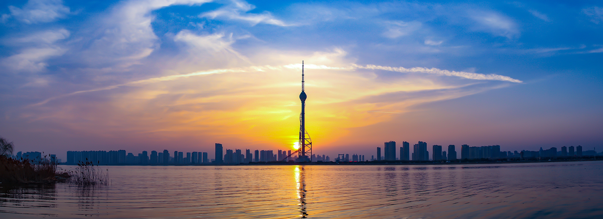

临沂概况
 临沂市，山东省辖地级市，位于山东省东南部，地跨北纬34°22′～36°13′，东经117°24′～119°11′之间，属温带季风气
候，四季分明，雨热同季，地势自北而南有沂山、蒙山、尼山3条主要山脉延伸，控制着沂沭河上游及其支流的流向，向南构成的
扇状临郯苍平原是山东三平原之一。总面积17191.2平方千米。截至2022年末，临沂市常住人口1099.31万人。截至2023年6月，临
沂市辖3个区、9个县，市政府驻兰山区北京路17号。 临沂市因临沂河得名，古称琅琊、沂州，是东夷文化的核心发祥地，有3000
多年的建城史； 春秋时建启阳城，汉代为琅琊治所，清设沂州府；抗战时期，临沂长期是山东抗日根据地的首府所在地和党政军
指挥中心，是华东局、华东军区、华东野战军、山东省政府的诞生地。1994年被设为地级市。临沂是具有滨水特色的现代工贸城市
和商贸物流中心、国家综合交通枢纽。有沂蒙山世界地质公园、银雀山汉墓竹简博物馆、王羲之故居、山东省政府旧址等名胜古迹和旅游景点；有荀子、曾子、诸葛亮、王羲之、颜真卿、刘洪等历史名人。曾获评全国文明城市、全国双拥模范城市、国家园林城市等国字号荣誉，被授予中国市场名城、中国物流之都、中国书法名城等称号。
临沂经济
首先，临沂市位于山东省东南部，地处长三角经济圈与环渤海经济圈的结合点，具有重要的地理位置优势。该市总面积17191.2平方
公里，截至2023年6月，常住人口为1099.31万人。自新中国成立以来，在中国共产党的领导下，临沂市经历了从革命老区到现代化
城市的转变，特别是改革开放以来，经济实力大幅提升，人民生活水平显著提高。
其次，在“十三五”期间，临沂市的经济体量位
次前移，GDP从2015年的2480亿元增长至2020年的4805.3亿元，总量在全省的排名也有所上升。2023年，临沂市生产总值达到610
5亿元，增长6.3%，其中第一产业增加值为530亿元、增长4.8%；第二产业增加值为2374亿元、增长7.9%；第三产业增加值为3201
亿元、增长5.4%。
最后，农业和物流业是临沂市的两大关键词。临沂被誉为“中国食品之都”和“中国物流之都”，这两个行业
的发展对临沂市的经济增长起到了重要支撑作用。同时，临沂市也是山东省内人口超过千万级的大城市之一，这为其经济发展提供了丰富的人力资源。
综上所述，临沂市经济发展取得了一定的成就，但也面临一些挑战，如经济增速在省内相对较低等问题。未来，临沂市需要继续发挥其地理和产业优势，推动经济结构的优化升级，以实现更加可持续和高质量的发展。
临沂文旅
文化方面：临沂市文化和旅游局自2019年成立以来，一直致力于落实党中央关于文化、旅游、文物等工作的方针政策，并加强党对文
化和旅游工作的集中统一领导。临沂积极发挥其区位优势，利用丰富的文化历史和生态环境资源，全力推进文化与旅游的融合高质量
发展。全市已经初步建成了市县乡村四级公共文化服务体系，包括综合性文化服务中心和文化小广场，以及开展了“沂蒙红色文艺轻
骑兵——千村行”等文化活动，每年送戏下乡5200余场。
旅游方面：临沂市在旅游发展方面也取得了显著成就。据统计，2018年和
2019年，临沂市接待国内外游客人数和旅游消费总额均有较大幅度的增长，连续两年居全省第六位，显示出文化和旅游产业对全市
经济社会发展的重要贡献。为了进一步提升旅游品质，临沂还推出了《2023年度临沂市旅游团队奖励办法》和《临沂市红色旅游
促进办法》，旨在激发旅游市场活力。
综上所述，临沂的文化和旅游业呈现出蓬勃发展的态势，不仅为当地居民提供了丰富的精神食粮，也为游客提供了多样的旅游选择，同时也为城市的经济社会发展做出了积极贡献。